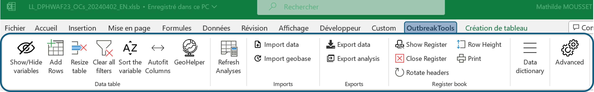
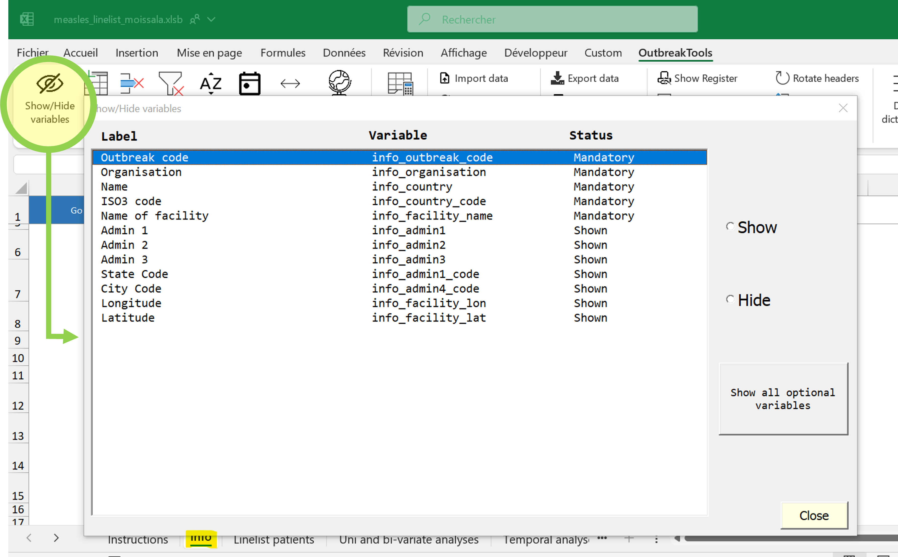
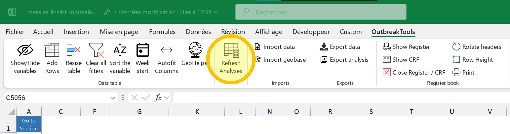
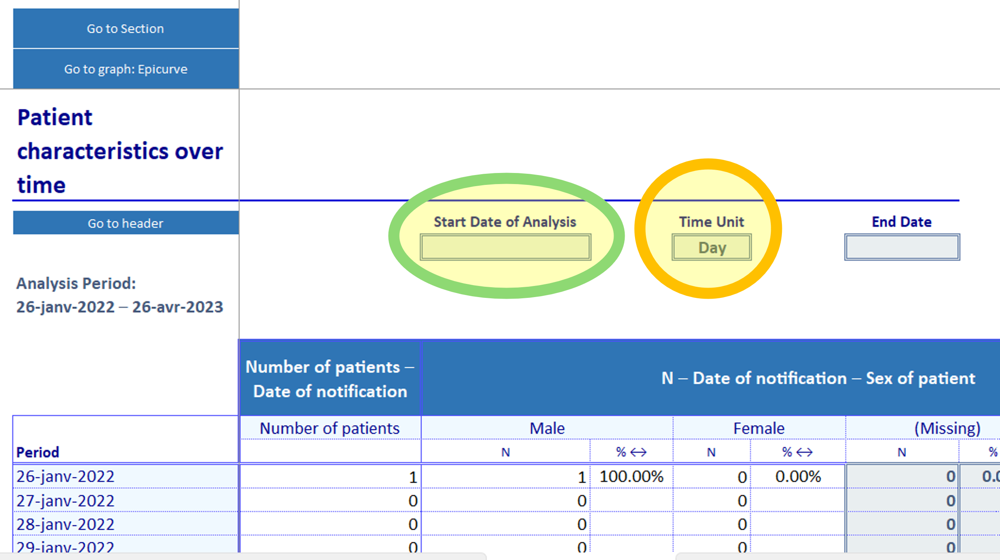
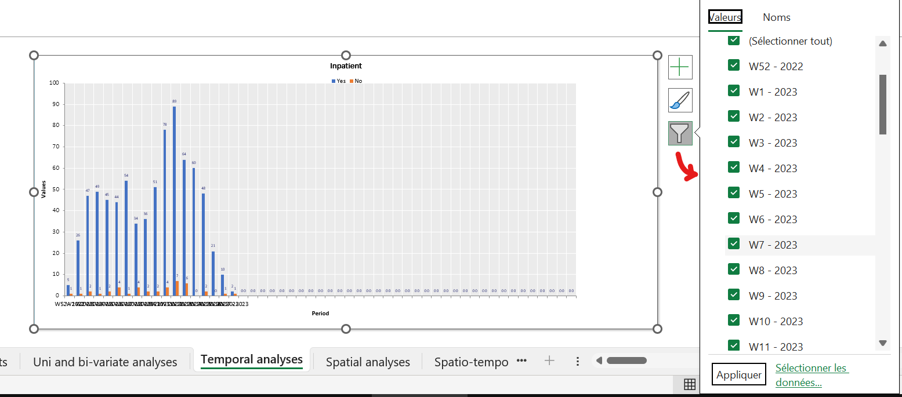
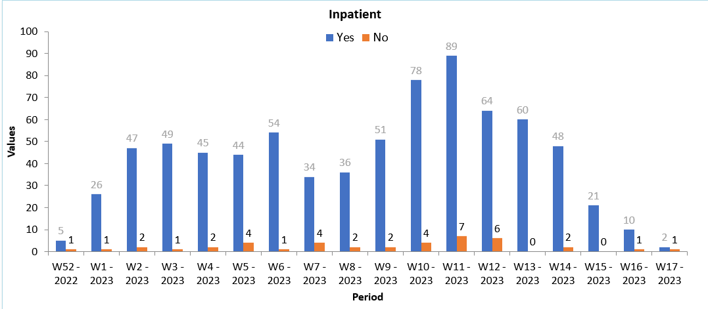
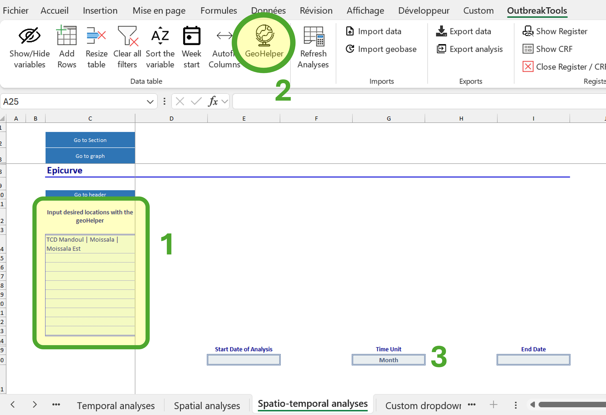
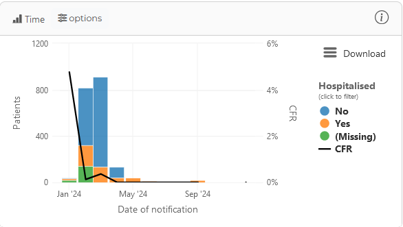

Tutorial
About this tutorial
In this tutorial you will familiarise yourself with the OBT linelist interface1 and the corresponding dashboard.
1 Remember all OBT linelist have the same type of interface
🎯 Objectives
- Explore functionalities of the OBT linelist, with a focus on troubleshooting the file and exploring analyses.
- Get access and understand how to use the intersection dashboard
🧭 Context
MSF has been working in eastern and southern Chad since 2006 where our teams provide medical care and assistance to displaced people and local communities who often struggle with a lack of food.
In December 2021, following several reports of measles cases in the Southern region of Mandoul, MSF decided to respond to the outbreak, with Epicentre support. A linelist is needed to collect patient data in structures.
You discussed with the MedRef and the MedCo, and you came to the decision to deploy the OBT linelist.
Activities
In this tutorial, you will get access to several files:
- an empty linelist to learn how to prepare a file before deployment
- a linelist with false data to replicate a linelist in use
- a linelist with false data and some problems to troubleshoot
You then will visit the Intersection dashboard to explore real MSF measles data in Chad.
Explanations will be given in simple text, or boxes (tips, notes etc.) and instructions will be given in instructions boxes.
I contain important information!
I am a handy bit of information that may be omitted if you are in a hurry, but totally deserve some attention at some point.
Now do do something!
Get ready
Download and unzip the tutorial materials
The files that you are going to use are stored on Github, bundled in a zip archive.
Go to the Github page to download the archive. Save it on your computer (in your Downloads folder for example).
Unzip the whole archive and save the files locally. It is better to save the unzipped folder in a location that is not actively synchronised with Onedrive at the moment.
Description of the folder content
- The current last version of the OBT measles linelist (standard version), empty
- A linelist with simulated data
- A text file with the password
Part 0: unlock files and functionalities
OBT linelists use VBA macros to add functionalities. As a consequence, linelists that come from the internet often need to be unblocked, and macro enabled in them.
Unblock your linelist, or make sure it is already unlocked. If you have never done that before, follow the steps from this page
You may have to perform some or all these steps on your computer, but you will certainly have to explain them to your collaborators using the linelist, as field computers are often more protected.
Part 1: prepare and deploy a linelist
Gather the files
Get a linelist template
In real life you should [get an empty template]((https://epicentre-msf.github.io/outbreak-tools/getting_started/get_linelist.html) but for this exercise you will use the template provided in the archive you downloaded.
Identify the correct empty file and make a copy on which you can work.
Download the geobase
Go to the Geoapp and download a geobase for Tchad. A summary of the steps can be found here, or in the popup at site opening.
The file is unprotected, you can open it to investigate its structure if you want to.
Adapt the linelist
Open the linelist (password: measles2024) and inspect sheet names.
Notably:
- The first sheet contains some instructions, but there is nothing special to do with it
- The second sheet (Info) contains project and site information
- The third sheet (Linelist Patients) is for patient data
- Most of the following sheets are analyses.
Find the OutbreakTools Menu, we are going to use it a lot in the rest of this tutorial.

Fill metadata
Mandatory metadata
Fill the Information sheet (metadata):
Organisation: enter your own sectionCountry: ChadName of facility: Moïssala Hospital
Once these fields are correctly filled, they should not be modified: the information will be used to name the exports.2
2 You may enter the name of the site yourself (if you are sending one or two linelists) or let the data encoders of each site enter fill it (if you are sending a linelist to many sites).
Optional metadata
Fill the following fields: Admin 1 (Mandoul) and Admin 2 (Moissala)
Hide unused fields
You think that you do not need the rest of the fields. Let’s hide them!
Keep the “Info” sheet in focus and go to the OBT menu. Click on the “Show / Hide variables” button.
It opens a popup window:
 You can see that some of the variables have the Mandatory status, but that some other have the Shown status. The former one cannot be hidden through this menu but the later can.
Hide the variables that we do not plan to fill. You can either hide them one by one, or use the “Show all variables” button twice and unhide the variables you want to keep.
Import the geobase
Use the “Import geobase” button from the OBT menu to import the geobase that you downloaded previously.
After closing the confirmation message you can go to the data entry shee and look for columns with an orange heading background:
- The labels of the column should have been updated with the administrative levels present in the geobase (e.g. “adm1_name” will change to “Province” for DRC).
- Loof at the cells of the first column, there should now be a dropdown menu containing the admin 1 of the geobase.
You can fill the variables either by using the cascading dropdown menus, or by using the GeoHelper button from the ribbon.
There is a hierarchy between these columns: if you attempt to fill the admin 3 without filling admin 1 and 2 the dropdown list will appear empty.
Choose the start of the week.
Click on the “Week start” button to set up “Monday” as the first day of the week.
Modify variable visibility
As for the “Info” sheet, you can hide or show optional variables in the patient data sheet. When you prepare a linelist, you will need to decide which variables to keep based on the needed information for this outbreak.^3
3 You can hide or unhide variables at a later stage. Of course, you will need to keep in mind that the data will be only partial for these variables (you have it only up to a date, or conversely from a date onwards).
For the sake of brevity of the exercise, here you will only perform a couple of actions.
Go to the “Linelist patients” sheet. Then click on the “Show/Hide variables” button. Hide all the optional variables, then unhide:
- Reporting health facility name
- Fever
- Maculopapular rash
- Cough
- Red eyes - Conjonctivitis
- MUAC
- Pregnant
- The custom variables at the end
- Any calculated variables that you wish to see displayed for information of quick filtering (epi week, age group etc.)
Print a register
Click on the “Show register” button in the OBT menu.
This opens a usually hidden sheet (that can be hidden again when you are done) to prepare a paper register if you don’t already have one in the site.
Typically, there will be less columns in the register than the full linelist, as some information may come from patient files or other sources.
Click on the “Show/Hide variables” button to open the popup window for the register.
Click on the “Match the show/hide from linelist” to align the register visibility on the linelist configuration as a start.
Hide variables that are not needed in the register
Now that you have selected the variables to print, you usually would want to adjust the register to make it more user-friendly:
- Tweak column width so that the data encoder have the space to write
- Change labels orientation, to save some space (for columns with short content)
- Add rows to the table until it fits one page4
4 Hint: there is a button in the OBT menu for that!
Adjust the width of the following columns:
Patient name: widerSex: narrower
Click on the “Print” button in the OBT menu to open the Print Preview. Note the “Settings” button to control some of the printing options.
When you are finished, you can exit the Print Preview, and hit the “Close Register / CRF” button to hide the register sheet (the sheet and your modifications are still here).
Prepare a Case Report Form
Similarly to what you did for the register, it is possible to print a CRF from the linelist if you don’t have one available. A button unhides a sheet displaying an automatically prepared draft for a CRF. There is still work to do on it to make it user-friendly but it’s a start.
Things that you might do:
- Hide variables that are collected elsewhere or calculated
- Hide/condense the lines
- Shorten some labels5
5 There now is an option in the setup file to provide shorter labels for the CRF from the start to reduce the time fixing label overlap, but they have not been filled for all linelists yet.
Preparing a clean CRF is out of the scope of this tutorial, but do not hesitate to open the view (“Show CRF” button) to have a peak at it before hiding it again.
Send the linelist
You have seen the main customisations of the linelist. Do not forget to save your customised template.
You can now send you to your colleagues. If they have worked with OBT linelists before (even for other diseases) this should be easy: all the OBT linelists have the same functionalities. If they have not worked with OBT linelist before, you should brief them on:
- Unblocking the file and authorising VBA macro
- Finding the OBT menu
- Filling the remaining metadata on the “Info” sheet
- Exporting files to send to the dashboard
- Using the GeoHelper
In most cases there should be one linelist per site.
Part 2: linelist in use
🧭 Context
The linelist was deployed in January 2022 in Moissala and the neighbouring areas. Almost a year later, in April 2023, the measles outbreak is still ongoing and the linelist still in use. You receive the file with data and you want to have a look at it.
You are now going to work on the file measles_linelist_moissala.xlsb, which contains simulated measles data6.
6 The data used in this exercise was simulated using parameters from MSF measles data, at least for some major variables, which avoids the problem of working with personnam data
Sanity checks
When you receive an unknown linelist with data, always perform a couple of checks to get a feel of the state of the file and data. These are not the extensive checks you would perform if you were tasked to monitor data entry and quality, or to perform analyses. They might however rapidly hint at the source of a reported problem (a functionality not working as expected).
File structure checks
Is the file obviously damaged?
- Does the OBT menu appears as expected (buttons have legible labels)?
- Test one button (for example, open the Show/Hide window): does it work as expected?
- Do you see the expected sheets?
If the ribbon buttons have weird labels or no labels at all, it means that the VBA is not activated or crashed. Check your VBA settings, close the file and re-open it.
If the problem persist, attempt an “Export for migration” to move the data to a new empty template.
If the export does not work because the VBA is corrupted, contact the EpiDS team to get help migrating the data.
Do these checks on the file measles_linelist_moissala.xlsb.
(Very basic) Data checks
- Are the metadata on the “Info” sheet (still) correctly filled?7
- Do patients have IDs?
- Are there replicated IDs?
- Check the filters of a couple of date columns: do the dates correspond to what you expect (min, max) and are there values not recognised as dates?
- Check a couple of categorical columns (
sex,outcome…) to see if the categories entered correspond to the expected values. - Remove any filters applied on the data (there is a shortcut for that in the OBT menu).
7 90% of export-dashboard problems come from badly filled metadata
Do these checks on the file measles_linelist_moissala.xlsb.
Analyses
Now let’s investigate the descriptive analyses provided with the linelist. While the general interface of the linelist is the same, the provided analyses may differ from disease to disease, depending on what was requested.8 Most linelists have at least the uni and bivariate tables, the temporal and spatial analyses.
8 Note that more analyses can be requested if needed.
There are a couple of important things to remember about the analyses in OBT linelists:
- Anaslyses need to be refreshed before being explored.

If you filter data in the main patient sheet, it will be reflected in the analyses after you refresh (a red warning will appear to remind you).
You can alter the appearance of the graphs (which are created automatically and admittedly a bit ugly), the same way you would do for your own figures, with any Excel tool.9
9 Note that graphs modifications will be lost during data migration to a new version of the linelist, so I advise you to restrict the modifications to graphs that you want to export to reports / slides, or which are really making your eyes bleed.
We are going to start by looking at the analyses without filters on the data.
Go to the patient data sheet, navigate to the OBT menu and click on the button to clear all filters. Then refresh analyses.
Now that the data was refreshed, we can begin checking out the analyses sheets.
Persons: uni and bivariate analyses
This page contains univariate and bivariate tables and bar charts providing information about patients: demographics, symptoms, outcomes etc.
Explore the page, and answer the following questions:
- What is the average length of stay of patients?
- How many patients are more than 15 years old?
- How many patients are female?
- What is the percentage of complicated measles?
- How many patients are SAM?
- How many patients died in the facility?
- How many patients are male and less than 5 months old?
- How many of the SAM patients are positive for the malaria RDT test?
Now let us investigate the characteristics of deceased patients.
- Go back to the patient data sheet. Use the filters to select only the deceased patients (in the facility and/or the community, it’s up to you)
- Hit the refresh button and go back to the analysis sheet.
- How many female patients of age between one and four died?
- How many of the deceased patients were MAM?
Time: temporal analyses
Now, let’s look at the “Temporal analyses” sheet. On this sheet you can choose the temporal scale you want to monitor: days, weeks, months, quarter, years. The table has 53 rows, and can thus accommodate up to:
- a high resolution zoom of a given period of 53 days
- one year worth of weeks
- 53 months if you have several years worth of data
- 53 quarters or years, which is a bit silly for most uses

Below the tables are several epicurves corresponding to the content of the table.
In this linelist, there is only one very large table. Some other linelists can have several tables, organised by sections, on top of each others. The graphs will always be a the bottom.
- Remove the filters on the data sheet and hit refresh.
- Check the minimum and maximum date of notification: which units would you consider?
- First select the “Week” unit. Which part of the data is not ploted?
- How many patients were discharged during the 18th week of 2022?
- Now change the date of start of period to only plot the weeks of 2023.
- How many patients were hospitalised in the second week of January 2023?
- Change the units to “Month”. How many patients were admitted in January 2023?
Now, if you went to have a look at the graphs, you should see one like that in the list of graphs:

It is fine to look at the shape of the epicurve, but you would not want to use it in a report as it is. Besides cosmetics improvements, you could use filters to remove the empty weeks at the right of the graph:
- Select the graph: some buttons appear at the top right corner.
- Use the “filter” button (the bottom one) to filter out the categories you don’t want to see.

Don’t forget to remove the graph filters when new data is entered in the linelist, or else you won’t see it on the graph. The corrolary is that if your colleague sends you a linelist complaining that the figures are correct in the table but do not appear in the graph, the filters are the prime suspects.
Place: spatial analyses
Now we navigate to the third analyses sheet. It displays the top 30 areas with the most cases, and below the top 30 places of origin (in the case of refugees and displaced people).10
10 The number 30 is defined in the setup file: another disease might have 10 or 20.
You can select the level at which you want to see the data displayed (admin 1 to 4).
Click on the blue button “Select your admin level” and go through the options. Which options have data in it? How many patients are there in Moissala Est?
For this linelist, data is meaningful at the “Zone of responsibility” level (admin 3), but with real data even higher levers may be worth checking if people are travelling a lot, or if you created a master linelist from different files.
Place and person: spatio-temporal analyses
The last analysis sheet that you may encounter in an OBT linelist is a crossover between the temporal analysis and the spatial analysis: it allows you to look at the number of cases (usually) for a couple of chosen administrative levels across time.
- Go to the spatio-temporal analysis sheet
- Place your cursor in one of the blue cells on the left (starting from
C14and down). - Click on the “GeoHelper” button in the OBT menu and select Moissala Est (an admin 3)
- Go to the next blue cell and use the Geohelper to select another place of interest (for example, one of the top places from the Spatial analysis sheet, or a place that you noticed had recent cases).

Part 3: troubleshooting
🧭 Context
You have sent the linelist for deployment to the field. The data encoder may have some questions or problems in the beginning, or after a handout.
For the following problems, identify the source of the problem and the solution.
Opening the file and getting it to work
Problem: your colleague opens the file and goes to the OBT menu. But the buttons do not respond and they have no labels.
The macros are not executing properly. It could be a problem of authorisation, or maybe the VBA project did not load properly or crashed. Ask them to close the file and reopen it to see if it solves the problem. If not, get them to verify if the file is unlocked and their authorisations for VBA macros (see Section 3).
General file management
A lot of the requests you might receive derive from the fact that people ususally do not read the documentation (even if it was sent to them) and do not know the existence of the OBT menu. The good news is that they are pretty straightforward to solve.
No more rows!
You receive the following mail:
Hello, attached is a linelist that is giving us trouble. Some cells are locked, so we cannot add new cases. We can’t work, please help.
What do you answer?
Use the “Add rows” button from the OBT menu to add lines at the bottom of the file.
Note: recent versions of the linelist automatically add five lines at the bottom of the file when someone enters data in the last line, so this should become less and less common, and a strong red flag that the data should be migrated towards a more recent version!
Remove empty rows
You receive the following email:
Hi, I need support on the linelist. There are empty lines (colored in red) and I can’t remove them because the file is protected, help please.
What do you answer?
Use the “Resize table” button from the OBT menu.
Missing rows
You get this mail:
Good evening, we entered data but some rows seem to be missing now but we did not delete them.
This one is trickier, because this could be caused by several problems such as:
- The document was closed without saving (data from “yesterday” or “this morning” were lost)
- OneDrive synchronisation errors (the last file got replaced by an older version from the server).
- There is a filter applied somewhere on the data and the rows are merely hidden.
- The user deleted data by mistake (since the sheet is protected, it is hard to delete data in bulk though, so this is less likely)
You will have to discuss with them, their setup, who worked on the file to figure out what may have happen, unless it’s the third case, which can be solved in one click. Which button would you use?
Use the “Clear all filters” button from the OBT menu.
Analyses not up-to-date
You receive the following email:
Good morning, I added data to the file but the analyses are empty / not to date.
What do you answer?
Use the “Refresh analyses” button from the OBT menu
The day after they contact you again:
Good morning, I used the refresh button yesterday to update the analyses and it woked. But today I entered new data, refreshed but all the data on the analyses sheets are striken. I cannot remove the strikethrough and I did not do anything, just enter data.
A recent update11 in Excel 365 uses strikethrough to label what Excel considers “stale values” (values that depend on other cells, which were modified). For esoteric reasons, the “Refresh analyses” does not (yet) trigger the removal of the strikethrough. A fix in the OBT is coming from 2025 onwards, but if this happens with an older linelist:
11 We saw the problem hit computers between November and December 2024
- Hit the F9 key to force recalculation (or use the “Calculate now” button from the “Formula” Excel menu)
- Then hit the “Refresh analyses” button from the OBT menu
- (Advised): ask if there is a more recent version of the linelist with the problem solved
Alternately, you can turn off this option if it bothers you in general.
Sending the data to the dashboard
Another source of friction is the sharing step of the linelist. In all cases, it is good to brief them on the steps to send data to the dashboard, but see if you can find the exact problems with these files:
They used OneDrive to share the linelist with EPI-DATA@epicentre.msf.org and received an error
They send the file
measles_linelist_moissala.xlsbto EPI-DATA@epicentre.msf.org and received an errorThey sent
measles_linelist_moissala_export_data_20250203-1136.xlsxto EPI-DATA@epicentre.msf.org and received an errorThey sent
MSL_linelist__MSL24__info_country_code__info_organisation__info_facility_name__anonymous__vb-1003__20250103-1541to EPI-DATA@epicentre.msf.org and probably did not receive an error, but the data does not appear in Chad in the dashboard
The file to send should be named MSL_linelist__MSL24__TCD__MSF-OCP__Mandoul Hospital__anonymous__vb-1003__20250103-1541
Either they sent the linelist itself, the wrong export, or the good export but they did not fill the “Info” sheet so the metadata could not be used in the name
Advanced
Sometimes the problem is less obvious or could have multiple causes, and you will need to investigate a bit more.
Open the Excel file troubleshooting.xlsb from the tutorial archive.
Your colleague contacts you. They have data for the start of January 2023, and they looked at the analyses sheets. But the analyses seem broken, even though they refreshed the data.
Problem 1. They know they have positive measles cases, but these cases do not show up in the univariate table / graph about measles test results.
Problem 2. The register says there should be 25 notifications in the first week, and 40 in the second week, but the numbers in the epicurve do not match. The univariate general summary is correct, though (65 patients seen).
Problem 3. They know there should be 5 deceased patients in the facility, 3 who had been notified in week 1, and 2 notified in week 2. But the numbers in the temporal analysis sheet do not correspond.
Figure out what the problems are. If the problems are quick to fix, do it. Think about the guidance you should provide your colleagues with to avoid these problems or troubleshoot them themselves.
Problem 1. Check out the authorised and entered values for the incriminated column (use filters!).
Problem 2. The temporal analyses rely on dates, by definition.
Problem 3. There are several sources to this problem. Maybe one less depending on what you did in past steps.
Problem 3. Are the dates correct? Are the values of the outcome column correct? If yes, what else could affect a graph based on epiweeks?
Problem 3. Maybe go check Section 4.2 to see if there is an option you could check.
Problem 1. They did not use the dropdown menu in the lab result column and somehow forced a value not from the list (“Pos” instead of “Positive”)
Problem 2. The notification date has some very dirty values that were not recognised as dates. As such, these notifications cannot be counted in the temporal analyses, because the conditions on the date cannot be met. Since the univariate summary has no conditions on dates, it is not affected.
Problem 3. One of the notification date was dirty and not recognised as a date. But maybe that was solved during the second problem if you felt confident about the dates. One of the values of the outcome column had a typo. Finally, the start of the week somehow got changed to Sunday, while it should be Monday in Chad, and one of the rows was affected by that. Have a look at the epiweek column, change the start of the week and check the column again (recalculate if needed).
The last problem is tricky, but it could happen easilly in a country where the start of the week is not the same as the default (Monday) and someone forgot to change it before using the file.
Part 4: dashboard
🧭 Context
The linelist is in use, and it was decided that the data would be sent for compilation and visualisation to Epicentre. You want to go and monitor the number of cases in Chad.
Access the dashboard
You need an account to connect to Epicentre dashboard. The creation of this account is semi-automatic for MSF addresses: go to this page.12
12 If you do not have an MSF address but think you should have access to a dashboard, contact the EpiDS team.
Once you have an account, you can go to the intersection dashboard site and connect with the account you created.
Map
First let’s look at the map.
- Zoom on the map to better see what’s happening in Chad.
- Select the ADM1 level to get a better resolution. Which health region has the most cases?
- Select the ADM2 level to see even more precisely. Which health district has the most cases? How many patients do not have (matched) geo data at this level?
- Select the ADM3 level to see if we have enough data at that level? What do you think?
The top of the map displays an “options” button that allow you to tweak circle size to reduce overlap and group data by a couple of variables.
Group data by whether patients are hospitalised or not. Do you see a difference between Moissala and Djodo Gassa?
There is a button on the left of the map (number 3 on Figure 2) that allows you to change the background of the map and hide / show the bubbles or attack rates to increase readability.
Click on a region to update the epicurve and age pyramid data for only the patients from this region. The selected region is highlighted in red. Click a second time on it to unselect it.
Epicurve
The top-right figure displays an epicurve. By default it looks like this for Chad:
Use the options of the graph (number 4 on Figure 2) to modify it to look like this:

The map and the epicurve have a hidden zoom button that you can see by hovering your mouse at the bottom right corner, which is handy on small screens (see number 5 on Figure 2) .
On the epicurve you can drag your mouse left and right to zoom in on some date period. A “Reset zoom” button will appear to undo the view.
Click on a bar to update the map and the age pyramid to show only the data related to that time period. A blue band indicated the selected bar. Click on the bar a second time to unselect it.
Click on legend item to unselect them and only show some categories. For example, in the above graph you could show only the hospitalised patients in two clicks, which is slightly faster than using the sidebar filters in this case.
Now explore
Explore the dashboard to answer the following questions:
When was the dashboard last updated for measles? (hint: no need to go into sub-menus, it is written on the main page)
In 2024, which country had the most measles cases? How many children of less than 6 months were notified? And girls specifically?
When was the dashboard last updated for Hepatitis E?
How many cholera consultations did MSF OCG performed in the last 90 days?
Going further
- Go to the Documentation site and read about migrating data and creating master linelists